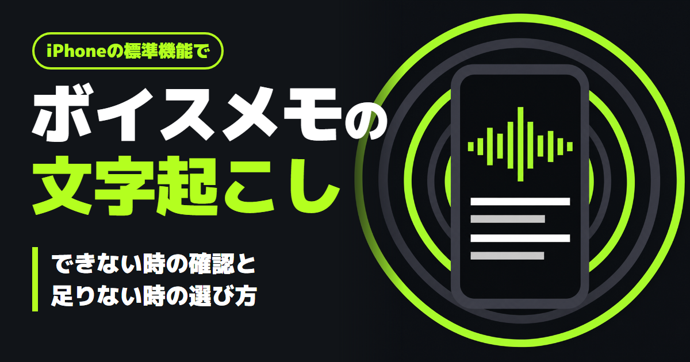
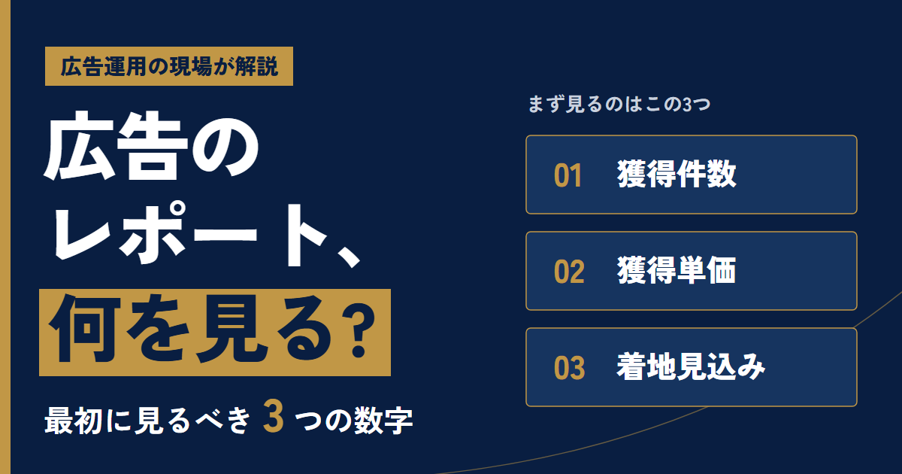

COLUMN
新着記事
-

iPhoneのボイスメモを文字起こしする方法｜標準機能の手順と足りないときの選び方
iPhoneのボイスメモを文字起こしする手順と、使える機種・iOSの条件、出ないときの確認点をAppleの公式ガイドで整理しました。話者の区別や要約が要るときの選び方も書いています。
-

広告運用はインハウスか外注か。判断の分かれ目と費用の総額、移行で手元に残すもの
広告運用をインハウスにするか外注にするか、広告費の規模・任せられる人と時間・商材から比較して決める方法をまとめました。1か月の総額の比べ方、一部だけ任せる分担表、切り替えで手元に残す権限や設定も、公式の名前で整理します。
-

スマホからPCを遠隔操作する方法｜iPhoneでChromeリモートデスクトップの代わり
外出先のスマホからWindows 11 ProのPCにつなぐ手順と、スマホからPCを遠隔操作する3つの方法の比較、Proが必要なことや商用は有料になる条件を整理しました。
-

中古トラックの買取相場。公開されている買取実績から見る小型・中型・大型の目安と、事業者が売る前に確認すること
2社が公開している買取実績を集計した年式別の目安と、見積もりを比べるときの確認点、事業者が売るときの消費税と必要書類を整理しました。
-

AIでホームページを作るデメリット。自分で直せる範囲と計測タグを、3つのツールの公式情報で確認
ロリポップ!AIホームページ・ジンドゥー AI ビルダー・ペライチを、料金、自分で直せる範囲、計測タグ、解約したときのサイトとドメインの扱いで比べました。
-

ホームページのサブスク比較。解約したら「サイトとドメイン」は残るのか、6サービスの規約で確認
月額制のホームページ制作6サービスを、料金・最低契約期間・3年間の総額と、解約したときにサイト・ドメイン・データが残るかで比べました。
-

PLAUD NOTEの機種比較。Note Pro・Note・NotePinの違いと、録音量で決まる1年目の総額
PLAUDの各機種の違いを公式の仕様で比べ、無料のStarterと有料プランを足した1年目の総額を計算しました。
-

個人事業主の特定商取引法の表記に、バーチャルオフィスの住所は使える?消費者庁が示す3つの条件
特定商取引法の表記に自宅住所を出さずに済むか。消費者庁のQ&Aが示す、バーチャルオフィスの住所を使うための条件と、契約前に確認することをまとめました。
-

バーチャルオフィスの比較。個人事業主は「1年目の総額」と郵便の受け取り方で選ぶ
個人事業主向けにバーチャルオフィス5社を、1年目の総額、郵便の受け取り方、途中解約や料金改定の条件で比べました。
-

広告運用代行の手数料。「20%」より先に確認したい、最低手数料と1か月の総額
最低手数料で実際の料率がどこまで上がるかの早見表と、クリエイティブの制作費や消費税を含めた1か月の総額、手数料込みの獲得単価の計算方法をまとめました。

広告代理店の選び方。運用者が見る4つのポイントと、Googleが代理店に求めているルール
アカウントの開示、レスの早さ、成約やLTVまで見るか、施策の量とスピード。運用者が重視する4つのポイントと、Googleが代理店に求めているルールをまとめました。

AIボイスレコーダーの比較。本体代と文字起こし料金の「1年目の総額」で選ぶ
PLAUD・Notta Memo・Comuとアプリだけの Notta を、本体価格と文字起こしの料金で比べ、録音量ごとの1年目の総額を公式情報で計算しました。

ペライチの料金プランを比較。広告のLPに使うときに確認したい条件
ペライチの4つの料金プランと機能の違い、1ヶ月の無料お試しの制限、計測タグの設置条件を、公式情報で整理しました。

シンレンタルサーバーとエックスサーバーの違い。広告・LP運用の視点で選ぶ
同じ会社が提供する2つのレンタルサーバーの違いを、公式サイトの料金・プラン・特典・機能で比べ、選び方を整理しました。

WordPressが遅い。サーバーを変える前に確認する3つのこと
表示が遅いとき、サーバーを変える前に確認したいことを、Googleの公式情報をもとに整理しました。移転で広告と計測を壊さない確認項目つきです。

AIO診断を受ける前に知っておきたいこと。Google公式は「特別な最適化は不要」と言っている
AIO診断(AI検索対策の診断)を受ける前に、Google公式が説明している内容と、自分で確認できる6つの基本を整理しました。

LPはどのサーバーに置くべきか。広告運用の現場で見ている5つの基準
広告から人を集めるLP(ランディングページ)は、どこに置くかで表示の速さや計測のしやすさが変わります。サーバーの性能表だけでは分からない「広告を回す側から見た選び方」をまとめました。

広告レポートの見方。最初に見るべき3つの数字と、見なくてよい数字の扱い
広告レポートの見方を整理しました。毎月最初に見る3つの数字、許容できる獲得単価(KPI)の決め方、1枚で足りるレポートの書き方、管理画面とGA4で数字が合わない理由をまとめています。